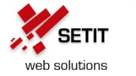
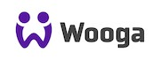
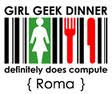
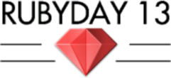

Ciao Roma! Rails Girls sbarca nella città eterna! Durante il workshop di un giorno e mezzo ci immergeremo
nel magico mondo di Ruby on Rails. Il seminario conserva il suo taglio internazionale ma si terrà interamente
in italiano utilizzando in parte materiale e servizi online in inglese.
Le iscrizioni sono chiuse. Le partecipanti accettate saranno informate a breve. Potete visitare la nostra
pagina Facebook e seguirci su Twitter!
Ciao Roma! Rails Girls comes to the Eternal City! During the free one-and-a-half-day workshop we'll dive into the magical world of Ruby on Rails.
Applications are closed. Acceptances will be sent very soon.
You learn designing, prototyping and coding with the help from our coaches.
You need your own laptop, curiosity and a sprinkle of imagination!
Want to help? We are looking for sponsors, speakers and volunteers!
Email us
| 20.00 |
Install FestGet know the attendees a little bit before hand. Bring your laptop if you can, so we can install Ruby on Rails for you.Where: The Hub, via dello Scalo di San Lorenzo 67, Roma Hot to get there: Look here |
|---|---|
| 21.300 |
Coach dinnerAll of the coaches are welcome to our coach dinner, where we'll go through the program for the next day. |
| 9:00 - 10:00 |
Registration, coffee and installationDuring the morning we’ll install Ruby on Rails on your computer. |
|---|---|
| 10:00 - 10:20 |
WelcomeOutline of the day & word from sponsorsWelcome! - Sara Labanchi What is Rails Girls! - Daniele Tatti Mattia Quilici - SETIT Stefano Guglielmetti - Mikamai |
| 10:20 - 10:45 |
Designing your web app |
| 10:50 - 11:10 |
Try tubyon your own VM! |
| 11:10 - 13:00 |
WORKSHOPJumpstart your first web application |
| 13:00 - 13:30 | Lunch |
| 13.30 - 13:45 |
Bentobox - Understanding Web AppsRecap of what we’ve learned and how it all fits together. |
| 13:45 - 14:30 |
Lightning talksSimona FortiAlessandro Ligi Other coaches on their coding experience |
| 15:00 - 15:10 |
v/c with Linda Liukas and Girls in Tech Italy |
| 15:00 - 17:00 |
WORKSHOPExtend your application. |
| 19:00 - |
Networking Time - AfterpartyOpen for everyone, meet cool people interested in tech. |
Applications close: March 10th
Acceptances informed: 17th March
Location: The Hub, via dello Scalo di San Lorenzo 67, Roma
Hot to get there: Look here !
Want to help? We're looking for partners & sponsors for the non-profit event! Email us!
 Mikamai is a digital agency with a strong passion for Ruby and Rails programming.
Mikamai will organize the Ruby Academy 2nd Edition on March / April 2013 @ Milan offices.
Mikamai is a digital agency with a strong passion for Ruby and Rails programming.
Mikamai will organize the Ruby Academy 2nd Edition on March / April 2013 @ Milan offices.
 GitHub is the best place to share code with friends, co-workers, classmates, and complete strangers. Over three million people use GitHub to build amazing things together.
GitHub is the best place to share code with friends, co-workers, classmates, and complete strangers. Over three million people use GitHub to build amazing things together.
 SETIT nasce nel 2001 e da allora opera nel settore della consulenza informatica. Ha lavorato in tutti i settori, per la pubblica amministrazione ma anche al fianco di aziende grandi e medie, fino ai singoli privati, studiando volta per volta le soluzioni più adeguate.
 Plivo eliminates the complexity from telephony by providing the most scalable and feature-rich voice and messaging platform wrapped with flexible APIs and backed by 24/7 support.
Plivo eliminates the complexity from telephony by providing the most scalable and feature-rich voice and messaging platform wrapped with flexible APIs and backed by 24/7 support.
 Wooga develops Social Games with love in Berlin.
Rails Girls Rome is co-organised with
The Hub Roma is about the power of innovation through collaboration. We set out to create spaces that combine the best of a trusted community, innovation lab, business incubator and the comforts of home.
 Girl Geek Dinners Roma is an informal organisation that promotes women in the Information technology industry.
 Ruby Day 13 is the official annual gathering of Ruby developers in Italy. The next conference is happening in Milan on June 15, 2013.
Girl Geek Life is a collaborative magazine focused on technology from a female point of view. Written by many different women, from variegated backgrounds, has its core on everything can passionate a girl geek, from the latest gadget to the hippest internet trend, to the newest researches on the role of women in a world mostly dominated by men.
How much does the workshop cost? Nothing, it's free! You just need to be excited!
Who is this aimed for? Women of any age with basic knowledge of working with a computer. We’ve had people of all ages taking part. Most of the workshop and small group work is done in italian, but one or two speeches are given in english. Please bring your laptop.
Can men attend? Yes, but you need to be accompanied by an interested lady. Also, girls are given a priority.
I know how to program - How can I help? We’re also looking for people to be coaches. We’ll have a two-three hour workshop before the event to walk you through the curriculum. Email us